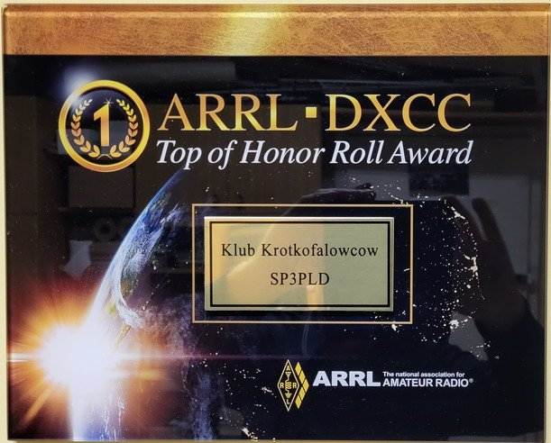

DX
Osiągnięcia
Wyniki pracy operatorów stacji klubowej SP3PLD.

ARRL DXCC
Top of Honor Roll — jedyny klub w Polsce
SP3PLD jako pierwszy i jedyny klub w Polsce ma potwierdzone wszystkie aktualne podmioty DXCC (340/340) i spełnia wymagania najwyższego wyróżnienia programu ARRL DXCC — Top of Honor Roll w klasyfikacji MIXED. Plakietę klub otrzymał w czerwcu 2023 roku.
340Top of Honor Roll
40/40Strefy WAZ
10Pasm
Stan na 11.10.2026
Statystyki DXCC i WAZ
Przygotowanie Czesław SP3IBM, aktualne na dzień 11.10.2026. Liczby DXCC obejmują także podmioty usunięte z listy DXCC - stąd MIXED 346 przy 340 aktualnych podmiotach.
Ściana w klubie